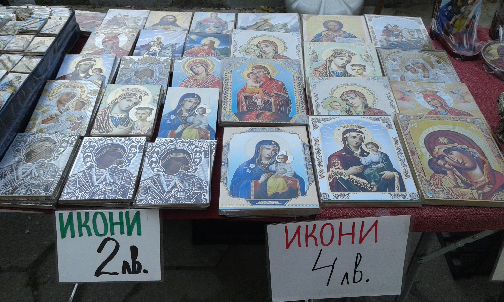

Two years has passed since my last balkan journey and I am back in the region again. This time I have visited another "triad" of countries Hungary, Romania and Bulgaria. Budapest was our first stop and while there we enjoyed a couple of nights out and an old turkish bath, actually one of the main reasons why people come to visit the city.
After having hired a car at the airport car rental in Timisoara, we started driving east towards Transilvania to visit some of the historical castles and to know more about Vlad Dracula, a wallachian ruler who made it to popular culture mostly thank to the novel of Bram Stoker which was inspired by the cruelty of the character. Many rumours about Vlad spread during the time, like that he used to dip his bread into the blood of his victims, but probably some of them were also an exaggeration from the real facts.
Driving through Romania we had the luck to visit the beautiful Corvins' castle, built in 1446 during the Kingdom of Hungary, the city of Sighisoara, the Bran castle built by the Saxons in 1377 that got so famous because somehow fits with the descriptions of Stoker masterpiece, although there is no clear evidence and also the beautiful Peles castle. Highlight of that trip through the forests of Romania, was the encounter with a bear that at some point while we were driving across the country, decided to cross our way while playing (or fighting who knows?) with a brave house dog. Driving through that green land brought in my mind one of the screen adaptation of Dracula, the black and white movie from 1931 made my Tod Browning starring Bela Lugosi, one of the best interpreter of Dracula according to many and certainly to the band Bauhaus.

The "major fifth" of the trip was Bulgaria. Compared with what seen before, what catches the eye the most on the first glimpse, it is the use of cyrillic alphabet and the maybe higher presence of soviet architecture in the country. The first stop was Plovdiv a city that despite the little time we spent there, left a mark in my heart. The city is full of archeological sites, lots of them from the greco-roman era including some beautiful roman theatres. The city is well kept and has lots to offer also in terms of nightlife, with a good amount of bars and restaurants around the city center and the main street. The day we reached Sofia was the day of my birthday and the day our trip came to an end. Shortly after I said goodbye to my travel buddy in front of a delicious bulgarian Gyuvech (a local dish stew cooked in local potteries), I had the best birthday evening I could imagine joining Hanna that I first met in Budapest at the beginning of my journey for a night out.